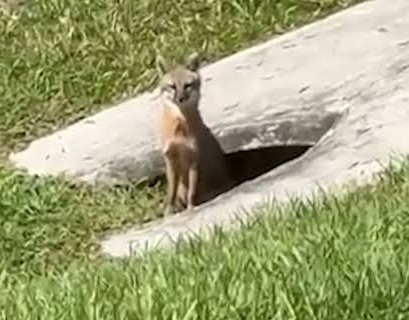
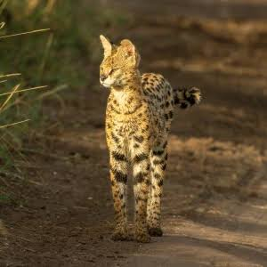
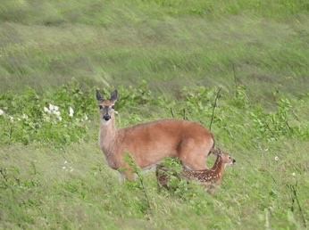
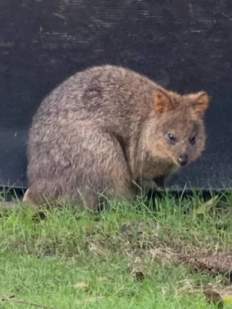

biodiversitypbl
Dear Roopa Ma'am,
This is a web page i made to present our team's hard work and dedication.
In this page I will show you on what all animals we saw and things we observed!
This are the pictures taken:




These were are observations:
Observing grassland animals reveals specialized physical and behavioral adaptations designed for survival in wide-open, treeless spaces. Because there is little cover to hide from predators or extreme weather, these animals rely on speed, underground shelter, group living, and specialized diets to thrive.
Here are some of our points:
1. Earth-Toned Camouflage.
Many species have tan, brown, or golden coats that blend seamlessly into dry grasses.
Lions use golden fur to stalk unseen, while deer, rabbits, and grasshoppers blend in to avoid detection
2. Living in Herds and Prides. Many animals gather in large social groups for safety in numbers.
Zebras and wildebeests form massive herds so more eyes can watch for predators, while lions and African wild dogs hunt in coordinated groups.
3. Shaping the Landscape. Large grazers like bison and African elephants act as ecosystem engineers.
Elephants knock down saplings to keep plains open, while bison hooves aerate the soil and spread nutrients.
We have come to an end with this presentation!
Created by
RHEA